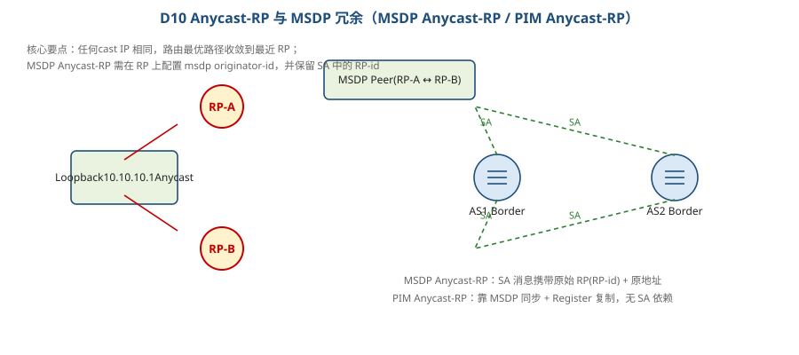

ch07 MSDP 与 MBGP 域间组播
来源：Aweya Ch6（P.382–P.439，MSDP 完整机制）、Williamson Ch17（P.508–P.525，域间组播）、iPexpert Ch10（P.10-1–10-27，MSDP）、Ch12（P.12-1–12-30，MP-BGP）、Volume II Ch1（Interdomain Routing and Internet Multicast） 配图：D12 MSDP Peer-RPF｜D10 Anycast-RP


学习目标
- 说清 MSDP 解决什么问题、四个报文类型与 SA 缓存机制；
- 掌握 Peer-RPF 的四条规则及其排障价值；
- 解释 MSDP Anycast-RP 中 RP-id 的作用；
- 说明 MBGP 在域间组播中的两个作用（通告源、传递组播 NLRI）；
- 独立规划并验证一个跨 AS 的 ASM 组播。
1. MSDP 解决什么问题
PIM-SM/ASM 的天然限制：
- RP 是单点且只能在域内；
- 源与 RP 分离时，RP 需要知道"源在哪" → 需要跨域交换源信息；
- 跨 AS 时不能共享 RP（IP 地址不同域）。
MSDP（Multicast Source Discovery Protocol, RFC 3974）：让多个 PIM-SM 域（或多个 AS）互相通告"哪个源在发哪个组"，而不需要共享 RP。
关键认知：MSDP 只交换源信息（SA），不转发组播数据。数据转发由 MBGP/PIM 各自完成。
2. MSDP 报文与机制
2.1 四种报文（Aweya 6.3）
| 报文 | 作用 |
|---|---|
| Source-Active (SA) | 宣告"源 S 正在发组 G" |
| SA-Request | 请求对端重发某条 SA（用于缓存失效补偿） |
| SA-Response | 对 SA-Request 的应答 |
| KeepAlive (KA) | 保活 MSDP 对等体（60 s） |
SA 报文关键字段：
Source Address : 源 S
Group Address : 组 G
RP Address / RP-id : 原始 RP（Anycast-RP 场景必需）
Originating RP : 最初学到该 SA 的 RP
2.2 MSDP 对等体与 Mesh-Group
ip msdp peer 10.2.2.2 connect-source Loopback0
ip msdp peer 10.2.2.2 connect-source Loopback0 mesh-group ANYCAST-RP
ip msdp mesh-group ANYCAST-RP member 10.2.2.2
ip msdp mesh-group ANYCAST-RP member 10.3.3.3
Mesh-Group 的价值：组播全互联（full mesh）在大规模时不可行（N² 条 TCP 连接）。Mesh-Group 把一组 peer 组成逻辑全连接，成员间只需 1 条 TCP，SA 在组内自由泛洪，显著减少 SA 数量与带宽。
2.3 SA 缓存与定时器（Aweya 6.7–6.9）
| 定时器 | 默认 | 说明 |
|---|---|---|
| SA-Advertisement Timer | 60 s | RP 周期性重发 SA |
| SA-State Timer（SA Cache Timeout） | 180 s | 缓存中 SA 的老化时间 |
| Peer Hold Timer | 75 s | 对等体 KeepAlive 超时判定 |
| KeepAlive Timer | 60 s | KeepAlive 发送间隔 |
| ConnectRetry Timer | 30 s | 断线后重连间隔 |
ip msdp cache-sa-duration 3600 ! 缓存时长
ip msdp sa-cache local maximum 1000
3. Peer-RPF：MSDP 的灵魂（Aweya 6.6）
问题：SA 在多 peer 网络中会重复传播、形成环路、浪费带宽。
机制：每台设备对"从哪个 peer 收到的 SA"做 Peer-RPF 检查，不通过则丢弃。
四条规则（按顺序判定）：
| 规则 | 内容 | 目的 |
|---|---|---|
| R1 | SA 的源 AS 必须与接收 peer 所在的 AS 相同 | 防止绕圈回传 |
| R2 | 若 peer 属于 mesh-group，则按 mesh-group 规则判定 | 允许组内自由传播 |
| R3 | 首跳 AS（First Hop）：SA 的源 AS 内离本机最近的路由器即为合法 peer | 保证 SA 沿最短路径扩散 |
| R4 | 默认 peer 规则：源 AS 内的"默认 MSDP peer" | 兼容老实现 |
排障口诀：
show ip msdp peer的 RPF 字段若不是*，说明该 peer 不是 SA 的合法来源 → 检查路由（BGP/OSPF）是否让本机成为"源 AS 内最近的路由器"。
4. MSDP Anycast-RP 与 PIM Anycast-RP（Aweya 6.13）

背景：多个 RP 使用同一 Anycast 地址。若源注册到 RP-A、接收者 Join 到 RP-B，RP-B 需要知道该源。
4.1 MSDP Anycast-RP（更完整）
- RP 之间用 MSDP 交换 SA；
- SA 报文必须包含两个 RP 字段：
- RP Address（RP-id）：Anycast 地址本身；
- Originating RP：最初接收 Register 的那个 RP 的唯一地址。
- 接收侧 RP 据此判断"这个源是否属于我的 Anycast 组"。
ip msdp originator-id Loopback0 ! 本机唯一标识（必需）
ip msdp peer 10.2.2.2 connect-source Loopback0
4.2 PIM Anycast-RP（简化）
- 同样依赖 MSDP，但交换的是 Register 报文的副本；
- 不依赖 SA 的 RP-id 语义；
- Cisco 称为 "MSDP peer +
ip pim anycast-rp"。
5. MBGP（Multiprotocol BGP）在域间组播中的作用
Volume II Ch1「Autonomous System Borders and Multicast BGP」+ iPexpert Ch12。
两个作用：
- 通告源：用
address-family ipv4 multicast（或ipv6 labeled）通告源可达性； - 传递组播 NLRI：通告 (S,G) 路由，供域间 RPF 与转发表使用。
router bgp 65001
address-family ipv4 multicast
neighbor 10.2.2.2 activate
network 10.1.1.0 mask 255.255.255.0
MP-BGP 排障要点：
show bgp ipv4 multicast summary看组播地址族是否建立；- 若
Peer rejects all MSDP SA messages→ 多为地址族未激活或 peer 未通告到 MSDP peer 网络的路由； Failure to advertise the MSDP peer network→ MSDP peer 互联地址没有在 BGP 中通告，SA 的 peer-RPF 因此失败。
6. 跨域组播的两种设计模型（Volume II Ch1）
| 模型 | 说明 | 适用 |
|---|---|---|
| Inter-AS / Internet Design | 每个 AS 有自己的 RP，MSDP+MBGP 互联 | 大型互联网/运营商互联 |
| Intra-AS Multi-domain | 一个 AS 内多个 PIM 域（按组或按 RP 作用域划分），域间用 MSDP 互联 | 企业/运营商内部多域 |
Domain（组播域）的划分方式（Volume II Ch1）：
- 按组划分（Group Scope）：不同组归属不同 PIM 域；
- 按 RP 作用域划分（RP Scope）：不同 RP 管不同组；
- 子域（Subdomain）与重叠域：设计上要避免"一个组同时属于两个域"，否则会出现两套 RP、状态分裂。
7. 排障命令
show ip msdp peer ! 对等体状态、SA 计数、RPF 状态
show ip msdp peer 10.2.2.2 detail
show ip msdp summary ! SA 总数
show ip msdp sa-cache ! SA 缓存内容
show ip msdp sa-cache 10.1.1.1 239.1.1.1
show ip msdp originator ! 本机 originator-id
debug ip msdp packets
debug ip msdp events
show bgp ipv4 multicast summary ! MBGP 组播地址族
show bgp ipv4 multicast 10.1.1.1 ! 组播 NLRI
8. 生产案例（6 例）
案例 7-1：MSDP peer 反复断开
现象：show ip msdp peer 中 peer 状态在 Up/Down 间抖动；SA 数量归零。
定位：show ip msdp peer 的 "Downtime" 递增；debug ip msdp events 显示 TCP 连接被重置。
根因：connect-source 的 Loopback 未在 IGP 中通告，或 MSDP 认证（password）不匹配 / MD5 配置错误。
处置：确认 Loopback 已宣告；核对两端 ip msdp peer ... password；检查 ACL 是否放行 TCP 639。
复盘：MSDP 依赖 loopback 源地址 + IGP 可达，这是最基础也最常错的两点。
案例 7-2：SA 收不到（Peer-RPF 失败）
现象：show ip msdp peer 显示 peer Up 但 RPF 列不是 *；show ip msdp sa-cache 为空。
定位：对比 SA 源 AS 与本机所在 AS；检查 BGP/OSPF 中到源 AS 入口的路由。
根因：本机不是"源 AS 内最近的 MSDP peer"（Peer-RPF 规则 3 不满足）——通常因为存在一条更近的路径（如直连的另一台设备）却未做 MSDP peer。
处置：调整拓扑使本机成为最近 peer，或在中间设备建立 MSDP peer 关系。
复盘：Peer-RPF 失败不是 bug，而是设计：SA 必须沿最短路径扩散。
案例 7-3：MSDP Anycast-RP 下 SA 缺少 RP-id
现象：Anycast-RP 架构中接收侧 RP 报"找不到源"，但 SA 已收到。
定位：show ip msdp sa-cache 中 SA 条目缺少 RP 字段；show ip msdp originator 未配置。
根因：未配置 ip msdp originator-id，SA 中没有 Originating RP，接收侧无法归属。
处置：配置 ip msdp originator-id Loopback0（每台 RP 都要配且唯一）。
复盘：MSDP Anycast-RP 的 originator-id 与 PIM Anycast-RP 的 ip pim anycast-rp 是两个不同配置，缺一不可。
案例 7-4：MBGP 未激活导致 SA 被拒
现象：MSDP peer 一直协商不上；debug ip msdp packets 显示连接被拒。
定位：show bgp ipv4 multicast summary 显示组播地址族未建立；BGP 配置中缺 address-family ipv4 multicast。
根因：MBGP 地址族未配置/未激活。
处置：配置组播地址族并 neighbor activate；确认双方一致。
复盘：域间组播 = MSDP（源通告）+ MBGP（路由）两条腿，缺一不可。
案例 7-5：SA Cache 太短导致源"时断时续"
现象：跨域流时通时断，show ip msdp sa-cache 中条目频繁出现又消失。
定位：show ip msdp peer 的 SA Count 在 0 与 1 间跳变。
根因：SA-Advertisement（60 s）与 SA Cache（180 s）定时器不匹配，或中间设备过滤了周期重发的 SA。
处置：延长 ip msdp cache-sa-duration；确认 SA 周期重发未被 ACL 拦截。
复盘：缓存老化时间必须大于宣告周期，否则会周期性"闪断"。
案例 7-6：跨域组播出现环路/重复转发
现象：跨 AS 链路上组播流量出现多份，接收端收到重复包。
定位：各 AS 边界 show ip mroute 显示同一 (S,G) 在多个出接口；show ip msdp peer 的 RPF 指向多个 peer。
根因：Mesh-Group 配置不当（成员 peer 之间互相转发 SA 且都认为合法），或 Peer-RPF 规则被绕过。
处置：正确规划 mesh-group 成员；核对 Peer-RPF；必要时在边界加过滤。
复盘：域间组播的环路防护完全依赖 Peer-RPF + 路由对称性，设计文档必须画 SA 扩散路径图。
9. 自测清单
- MSDP 解决什么问题？它是否转发组播数据？
- 四种 MSDP 报文分别做什么？
- Peer-RPF 的四条规则是什么？
show ip msdp peer中 RPF 列的含义？ - Mesh-Group 解决了什么扩展性问题？
- MSDP Anycast-RP 中 SA 必须携带哪两个 RP 字段？为什么都需要？
- MBGP 在域间组播中承担哪两个职责？
- "按组划分域"与"按 RP 作用域划分域"各自的优缺点？
10. 延伸阅读
- Aweya Ch6（P.382–P.439）
- Williamson Ch17（P.508–P.525）
- iPexpert Ch10、Ch12
- Volume II Ch1（P.19–P.115）：Interdomain Routing and Internet Multicast
- 延伸：
RFC 3974（MSDP）、RFC 4760（MP-BGP）、RFC 7761 §4.4（MSDP Anycast-RP）